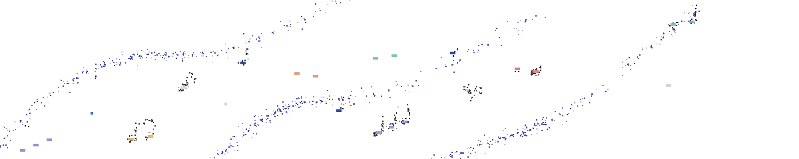

FOH mixes & multitrack sessions, played back at source resolution.
Audio technician and Communication Arts student at the University of Wisconsin–Madison specializing in live sound, broadcast audio, and recording. Experienced supporting performances through FOH mixing, live recording, and technical production, with hands-on experience in venue, broadcast, and corporate A/V environments. Expected to graduate Fall 2026.
Audio
Live sound reinforcement, FOH mixing, signal flow & routing, multitrack recording, mixing & mastering
Equipment
Digital consoles, microphone systems, monitor systems, DI boxes, live recording setups
Programs
Adobe Audition, Adobe Premiere Pro, Adobe After Effects
May 2026 – Dec 2026
Assistant Technical Director
WSUM Student Radio, Madison, WI
FOH mixing, live recording, and broadcast engineering for weekly in-station artist performances; equipment maintenance and crew training.
May 2026 – Dec 2026
Special Events Attendant
City of Madison Parks Division
Deployed portable PA systems and a mobile LED video wall for outdoor screenings and public events, from setup through teardown.
May 2025 – Aug 2025
Production Intern
EideCom, Minneapolis, MN
Supported load-in/load-out of A/V and staging equipment; organized and inventoried gear for a company-wide relocation.
B.S., Communication Arts — Radio, Television, Film
University of Wisconsin–Madison · Expected Fall 2026